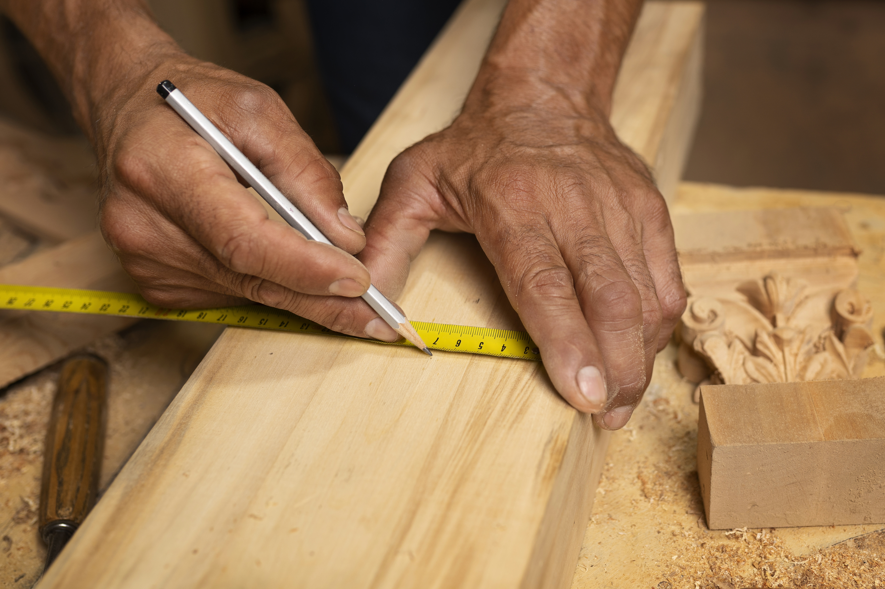
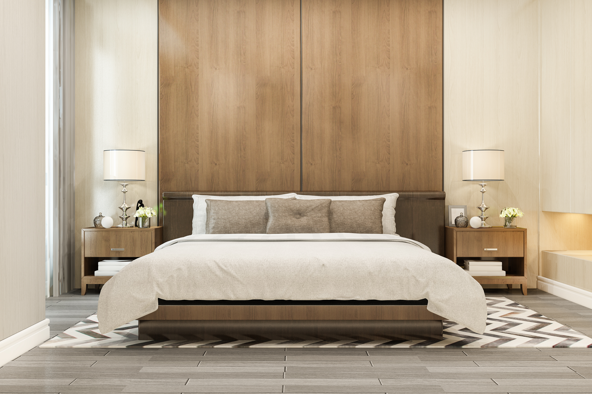

The Right Way to Care for Solid Wood Furniture
May 2025 · 6 min read · WoodNest Journal

Why Wood Furniture Care Matters
Solid wood furniture is one of the few categories of household goods that genuinely improves with time when cared for correctly. The grain deepens, the patina develops, and a well-maintained piece looks more alive at fifteen years than it did on delivery day. That outcome requires active maintenance — but far less than most people expect.
The most common reason wood furniture deteriorates early isn't a single catastrophe. It's the accumulation of small, preventable damage: rings from glasses, scratches from objects slid across the surface, dryness from low indoor humidity. These are all avoidable with simple, consistent habits.
Daily and Weekly Cleaning
For daily cleaning, a dry or barely damp microfibre cloth is almost always the right answer. Dry for dusting; slightly damp — wrung out, not wet — for removing fingerprints and light residue. The rule: never leave water standing on a wood surface. Water penetrates oil and wax finishes, raises the grain, and over time causes whitening, staining, and in extreme cases warping.
Avoid all-purpose household cleaners on wood furniture. Most contain solvents or pH-adjusting agents safe on synthetic surfaces but damaging to oil and wax finishes. A small amount of dish soap in water, applied with a wrung cloth and followed by a dry wipe, is acceptable for occasional sticky residue — but it shouldn't be routine.
Oiling — When and How
Most solid wood furniture carries an oil or hard-wax oil finish rather than a lacquer. Oil finishes penetrate the wood rather than sitting on the surface, which makes them more forgiving of minor scratches and much easier to refresh at home. They do require periodic re-application — roughly once a year for tables in daily use, every 18–24 months for pieces with less contact.
Signs your furniture needs oiling: the wood looks dry or slightly grey in colour, water no longer beads on the surface, or the wood feels slightly rough. Any of these indicate the oil has depleted.
To re-oil: clean the surface first. Apply oil with a lint-free cloth in the direction of the grain. Leave for 15–20 minutes. Wipe off the excess completely — pooled oil doesn't cure properly and becomes sticky. Leave 24 hours before replacing items on the surface.
Protecting Against the Most Common Damage
The single most effective protective habit is using a coaster or mat under anything wet or hot. Rings and heat marks occur on furniture that's otherwise well-maintained simply because coasters aren't within reach. Keep them accessible on every surface.
Felt pads under any item that sits on a wood surface prevent the slow surface scratching that accumulates over months. Replace felt pads once they become compressed or pick up grit.
Fixing Minor Damage at Home
Light surface scratches in an oil finish can often be addressed at home. Clean the scratch, apply a small amount of matching wood oil, and buff with a cloth. The oil slightly swells the surrounding fibres and reduces the scratch significantly.
Water rings that are white or pale indicate moisture trapped under the surface finish — not in the wood itself. A gentle heat application (a clean cloth ironed on low heat, moving constantly) can draw the moisture out. Apply wood oil afterward.
The Simple Routine
- Wipe down weekly with dry or barely damp cloth
- Re-oil annually or when wood looks dry or grey
- Always use coasters and felt pads
- Keep away from direct sustained sunlight
- Maintain indoor humidity between 40–60%
- Address minor scratches with oil immediately before they accumulate grit
Our Solid Wood Pieces


